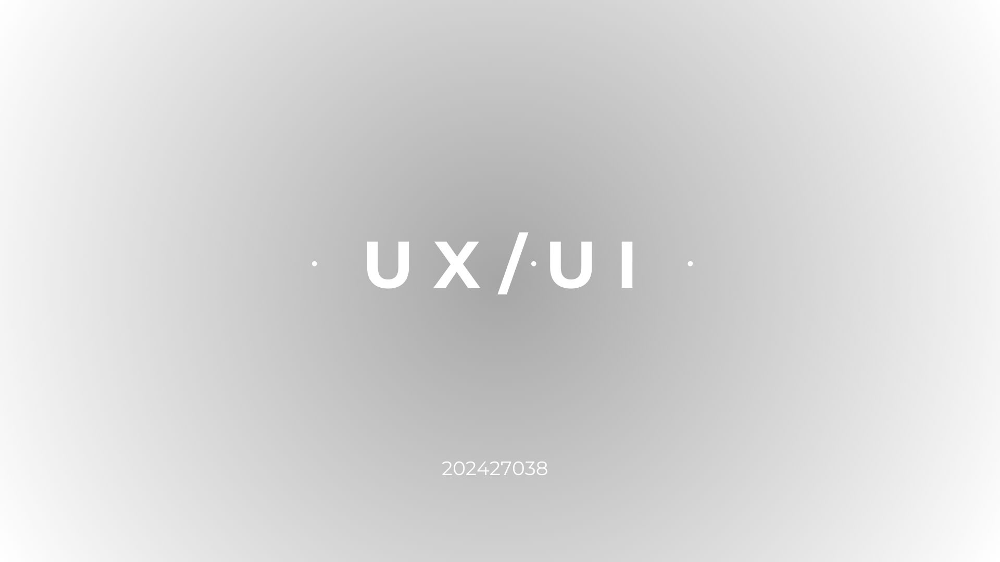
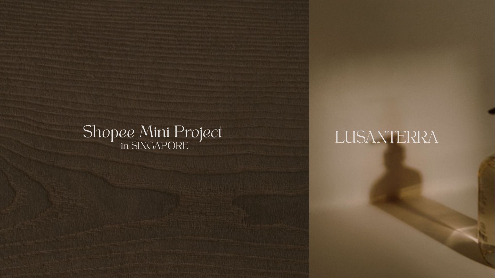

쇼핑몰 기획 및 제작
감성적인 브랜드 아이덴티티 설계
‘당신의 감각을 깨우는 향’ – 시향 키트 기반 커스터마이징 퍼퓸 쇼핑몰 기획
향을 온라인에서 맡아볼 수 없는 불편함에서 출발해, 섬세한 시향 키트와 감성적인 UI로 향수 경험을 재해석한 브랜드 웹사이트를 기획했습니다.
우아하고 섬세한 감각의 경험을 중심에 두고, 시향 키트 구성부터 브랜드 톤, 타겟 설정, 콘텐츠 제작까지 브랜드의 무드가 일관되게 전달되도록 설계했습니다.
사이트 링크

UX/UI 디자인
사용자 감성을 고려한 인터페이스
'캠퍼스 배달 서비스 UX/UI 기획 프로젝트'
대학생 대상 캠퍼스 배달 매칭 서비스 기획 프로젝트를 진행했습니다.
시장조사와 사용자조사를 바탕으로 문제를 정의하고, 서비스 컨셉 수립과 핵심 기능, 사용자 플로우를 설계했습니다.
‘자율성과 가성비’를 키워드로 심플하고 직관적인 UX를 구축했습니다.
사이트 링크

상세페이지 제작
감성을 건드리는 색채
'브랜드 빌딩 프로젝트'
싱가포르 쇼피(Shopee) 런칭을 위한 스킨케어 신제품 LUSANTERRA Nutrient-Boosting Toner의 브랜드 컨셉 개발, 타겟 설정, 상세페이지 기획 및 콘텐츠 제작을 담당했습니다.
‘조용하고 따뜻한 고급스러움’을 키워드로, 자연주의와 프렌치 감성을 결합한 고유의 무드를 구축했습니다.
사이트 링크